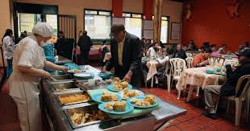
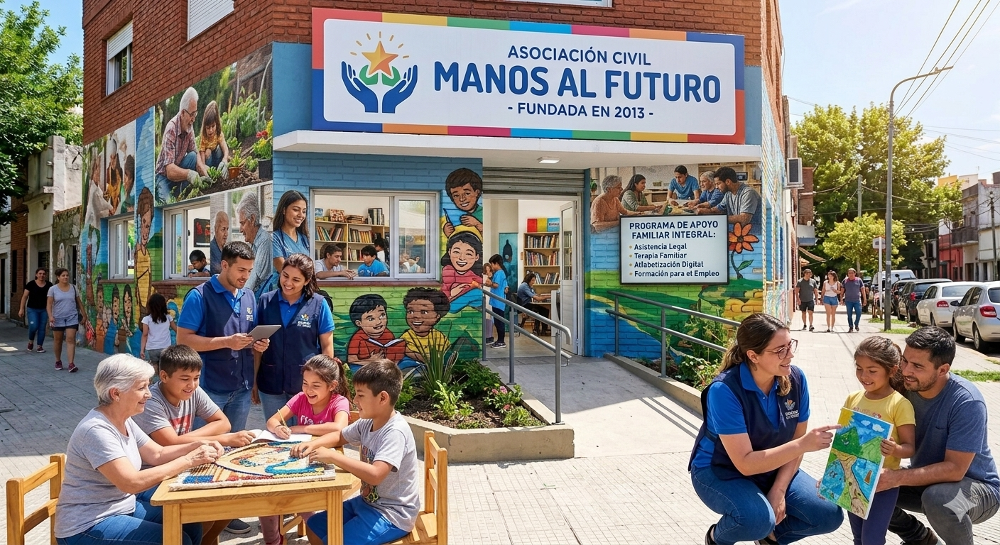

Estamos desde 2013 ayudando a las personas
Todo comenzo con un grupo de universitarios que ayudaban voluntariamente en un comedor comunitario. Este grupo de personas se fijaron que muchos jovenes no tienen las herramientas adecuadas para estudiar porque sus familias estan muy ocupadas trabajando viviendo en mucha precariedad.

Se dieron cuenta que solo dandoles comida no mejoraria su vida, habia que intervenir en su educacion y brindarles herramientas para avanzar, tanto ellos como sus familias. Desde entonces hablabamos con cada chico sobre su situacion y tratabamos de ayudarlos con sus deberes pero no tenian buenos utiles a su disposicion y sus vidas eran muy dificiles. La tarea nos superó. Entendimos que las ganas no eran suficientes para sanar heridas profundas. Hicimos un llamado a compañeros y amigos: psicopedagogos, médicos y trabajadores sociales se sumaron como voluntarios. Lo que empezó como un grupo de apoyo en una plaza, se transformó en una red de profesionales decididos a cambiar el sistema desde adentro.
El sueño del edificio propio
Tras años de trabajar en plazas y centros prestados, en 2021 la ONG logró un hito histórico: la inauguración del "Centro de Oportunidades". Este espacio fue diseñado específicamente para las necesidades de los jóvenes. Cuenta con una biblioteca comunitaria, un laboratorio de computación y tres aulas de apoyo escolar. La construcción fue posible gracias a una campaña de recaudación de fondos donde participaron más de mil donantes individuales y varias empresas locales que donaron materiales de construcción.

Nuestros Logros Comunitarios
Desde el año 2013, el esfuerzo colectivo de los voluntarios, profesionales y donantes ha transformado la realidad del barrio, consolidando metas que al principio parecían inalcanzables. El impacto real de la fundación se refleja en los siguientes avances concretos dentro de la comunidad:
Nuestra Huella en Argentina
Desde 2013 , expandiendo nuestro legado:
| Provincia | Sedes | Jovenes Conectados | Foco del Programa | Proyecto Estrella |
|---|---|---|---|---|
| Buenos Aires | 3 Centros | +1.500 | Inclusión digital y oficio | Laboratorio de Robótica |
| Chaco | 1 Centro | +400 | Apoyo Escolar y nutricion | Biblioteca Movil Rural |
| Mendoza | 2 Mendoza | +650 | Orientacion Vocacional | Becas Universitarias |
| Cordoba | 1 Centro | +500 | Programacion y empleo | Primer Empleo Tech |
| Salta | 2 Centros | +550 | Talleres Culturales y ESI | Orquesta Comunitaria |